Getting started with `cityClimateHealth`
cityClimateHealth.RmdGetting started with cityClimateHealth
Here is code that shows the basic skeleton of how this package works. We can run the model and then calculate attributable numbers easily, and provide a number of outputs.
Run the model
Exposure
First, create the exposure object - you will need to define the
exposure_columns.
library(data.table)
# load a built-in dataset and get a subset
data("ma_exposure")
exposure_sub <-
subset(ma_exposure,
COUNTY20 %in% c('MIDDLESEX', 'WORCESTER'))
# define columns of ma_exposure
exposure_columns <- list(
"date" = "date",
"exposure" = "tmax_C",
"geo_unit" = "TOWN20",
"geo_unit_grp" = "COUNTY20"
)
# create the object
ma_exposure_matrix <- make_exposure_matrix(exposure_sub,
exposure_columns,
time_subset = list(
month = 5:9,
year = 2012:2015
))
#> -- NA values automatically removed
#> > No factors to collapse to, using all data
#> > grp_level == FALSE, so using geo_unit as strata
#> strata dt_by = 'day', setting strata as geo_unit:yr:mn:dowAnd lets preview this
head(ma_exposure_matrix)
#> date TOWN20 COUNTY20 tmax_C strata match_strata
#> <IDat> <char> <char> <num> <char> <char>
#> 1: 2012-05-01 ACTON MIDDLESEX 16.4633 ACTON:yr2012:mn05:dow03 ACTON:2012-05-01
#> 2: 2012-05-02 ACTON MIDDLESEX 8.6743 ACTON:yr2012:mn05:dow04 ACTON:2012-05-02
#> 3: 2012-05-03 ACTON MIDDLESEX 11.1778 ACTON:yr2012:mn05:dow05 ACTON:2012-05-03
#> 4: 2012-05-04 ACTON MIDDLESEX 12.4253 ACTON:yr2012:mn05:dow06 ACTON:2012-05-04
#> 5: 2012-05-05 ACTON MIDDLESEX 12.8489 ACTON:yr2012:mn05:dow07 ACTON:2012-05-05
#> 6: 2012-05-06 ACTON MIDDLESEX 17.7602 ACTON:yr2012:mn05:dow01 ACTON:2012-05-06
#> explag1 explag2 explag3 explag4 explag5
#> <num> <num> <num> <num> <num>
#> 1: 14.0179 14.1931 12.7975 17.5538 16.2753
#> 2: 16.4633 14.0179 14.1931 12.7975 17.5538
#> 3: 8.6743 16.4633 14.0179 14.1931 12.7975
#> 4: 11.1778 8.6743 16.4633 14.0179 14.1931
#> 5: 12.4253 11.1778 8.6743 16.4633 14.0179
#> 6: 12.8489 12.4253 11.1778 8.6743 16.4633Outcome
Next, create the outcome object. As seen in other tutorials, you can
collapse_to a factor level and get outputs that way later
on.
# load a built-in dataset, and get a subset, for speed
data("ma_deaths")
deaths_sub <-
subset(ma_deaths,
COUNTY20 %in% c('MIDDLESEX', 'WORCESTER'))
# define columns of ma_deaths
outcome_columns <- list(
"date" = "date",
"outcome" = "daily_deaths",
"factor" = 'age_grp',
"factor" = 'sex',
"geo_unit" = "TOWN20",
"geo_unit_grp" = "COUNTY20"
)
# create the object
ma_outcomes_tbl <- make_outcome_table(deaths_sub, outcome_columns,
time_subset = list(
month = 5:9,
year = 2012:2015
))
#> > No factors to collapse to, using all data
#> > grp_level == FALSE, so using geo_unit as strata
#> Missing outcome values introduced by xgrid were set to 0;
#> assumes that every time in the dataset should have an outcome value
#> strata dt_by = 'day', setting strata as geo_unit:yr:mn:dowAnd lets preview this
head(ma_outcomes_tbl)
#> date TOWN20 COUNTY20 daily_deaths strata
#> <IDat> <char> <char> <int> <char>
#> 1: 2012-05-01 ACTON MIDDLESEX 73 ACTON:yr2012:mn05:dow03
#> 2: 2012-05-02 ACTON MIDDLESEX 78 ACTON:yr2012:mn05:dow04
#> 3: 2012-05-03 ACTON MIDDLESEX 78 ACTON:yr2012:mn05:dow05
#> 4: 2012-05-04 ACTON MIDDLESEX 78 ACTON:yr2012:mn05:dow06
#> 5: 2012-05-05 ACTON MIDDLESEX 78 ACTON:yr2012:mn05:dow07
#> 6: 2012-05-06 ACTON MIDDLESEX 72 ACTON:yr2012:mn05:dow01
#> strata_total match_strata
#> <int> <char>
#> 1: 423 ACTON:2012-05-01
#> 2: 420 ACTON:2012-05-02
#> 3: 414 ACTON:2012-05-03
#> 4: 327 ACTON:2012-05-04
#> 5: 334 ACTON:2012-05-05
#> 6: 334 ACTON:2012-05-06Run the conditional poisson model
we then run a conditional poisson model.
Cross-basis arguments
There are built-in arguments for argvar and
arglag that you can override if you’d like, but the
defaults are:
-
maxlag: default is 5 (days) -
argvar: default isns()and knots at the 50th and 90th percentile of unit-specific exposure. -
arglag: default islist(fun = 'ns', knots = logknots(maxlag, nk = 2))
You can also affect the global centering point:
- the default behavior is
global_cen = NULL, meaning that the mininum RR will be used - you can override this by setting
global_cen
Model types
Now you have several options for running the conditional poisson model:
| Design | Function | Description |
|---|---|---|
| 1-stage design |
condPois_1stage
|
Produces a single set of beta coefficients across all included spatial
units. If multiple geo_units are present in the input
objects, multi_zone = TRUE must be set. This option does
not use mixmeta or blup.
|
| 2-stage design |
condPois_2stage
|
Estimates beta coefficients for each spatial unit and then uses
mixmeta and blup to obtain more stable
estimates.
|
| Spatial Bayes |
condPois_sb
|
Also estimates beta coefficients for each spatial unit, but applies
Bayesian methods to stabilize estimates by borrowing information from
neighboring spatial units, rather than from the full dataset as in
mixmeta. This approach is especially useful in settings
with small outcome numbers.
|
We show code for each but just run condPois_2stage in
this vignette.
ma_model <- condPois_2stage(ma_exposure_matrix,
ma_outcomes_tbl,
verbose = 1,
global_cen = 15)
#> -- validation passed
#> -- stage 1
#>
#> crossbasis args for geo_unit ACTON :
#>
#> maxlag: 5
#>
#> argvar:
#> List of 2
#> $ fun : chr "ns"
#> $ knots: Named num [1:2] 25.7 31.4
#> ..- attr(*, "names")= chr [1:2] "50%" "90%"
#>
#> arglag:
#> List of 2
#> $ fun : chr "ns"
#> $ knots: num [1:2] 0.878 2.095
#>
#> strata:
#> ACTON:yr2012:mn05:dow03
#> strata_min: 0
#>
#> min_n: 50
#>
#> formula:
#> daily_deaths ~ cb
#> family: quasipoisson
#>
#> -- mixmeta
#> formula: ~ 1 | COUNTY20/TOWN20
#> -- stage 2For condPois_1stage the call would look like this, where
you’d need to add the argument multi_zone = T because there
are multiple geo_units in
ma_exposure_matrix:
ma_model <- condPois_1stage(ma_exposure_matrix, ma_outcomes_tbl,
multi_zone = T,
global_cen = 15)See vignette("one_stage_demo") for more details. Note
that forest_plot and spatial_plot are not
implemented for condPois_1stage since you can get all of
that information from the RR plot.
And for condPois_sb, the only additional information
you’d need is a shapefile showing how the geo_units are
arranged, in this case ma_towns (in a test run this code
took 20 minutes to complete for the full MA dataset [with maybe some
additional bugs to work out]):
data("ma_towns")
ma_model <- condPois_sb(ma_exposure_matrix, ma_outcomes_tbl,
global_cen = 15, ma_towns)See vignette("bayesian_demo") for more details.
Plot outputs
And are several plots you can make.
First, a basic RR plot by geo_unit:
plot(ma_model, "CAMBRIDGE")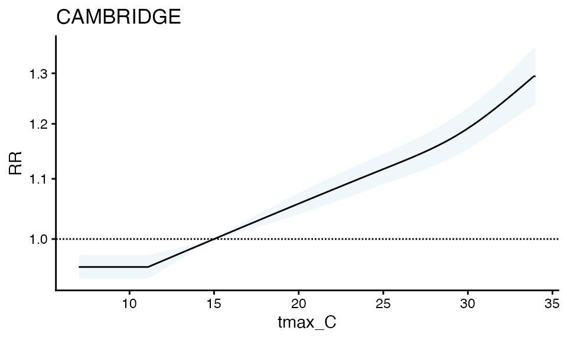
You can also make a forest plot at a specific exposure value
forest_plot(ma_model, exposure_val = 25.1)
#> Warning in forest_plot.condPois_2stage(ma_model, exposure_val = 25.1): plotting
#> by group since n_geos > 20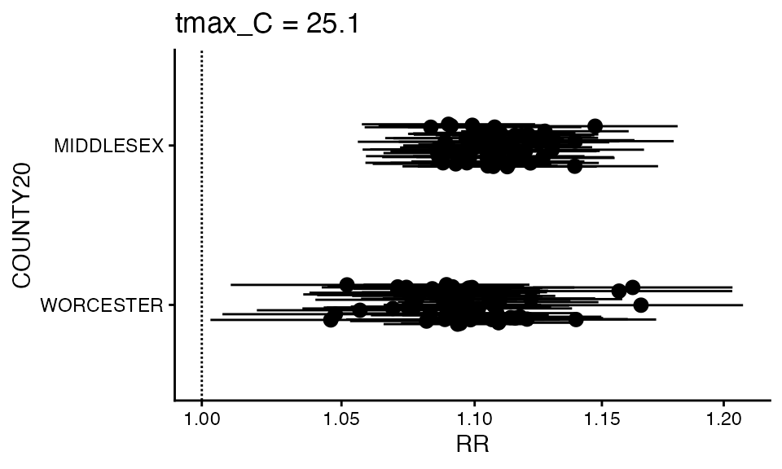
You can also make a spatial plot at a specific exposure value:
spatial_plot(ma_model, shp = ma_towns, exposure_val = 25.1)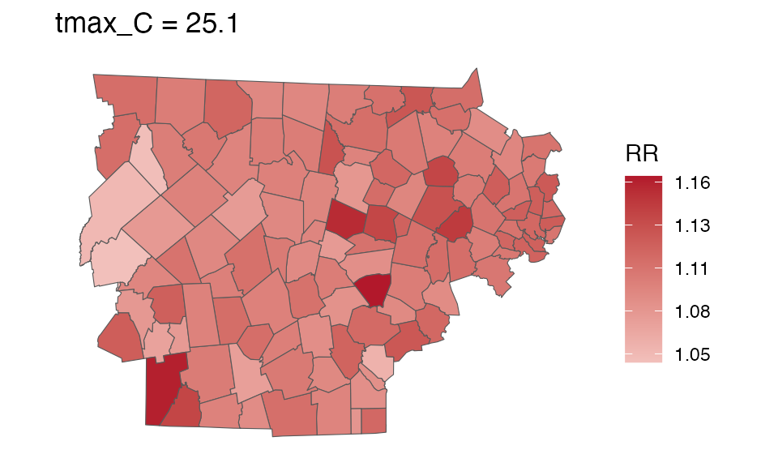
getRR
For your own purposes, each of these objects has a getRR
function
getRR(ma_model)
#> TOWN20 COUNTY20 tmax_C RR RRlb RRub model_class
#> <char> <char> <num> <num> <num> <num> <char>
#> 1: ACTON MIDDLESEX 7.0 0.9563939 0.9169757 0.9975065 condPois_2stage
#> 2: ACTON MIDDLESEX 7.1 0.9568875 0.9179730 0.9974517 condPois_2stage
#> 3: ACTON MIDDLESEX 7.2 0.9573815 0.9189714 0.9973970 condPois_2stage
#> 4: ACTON MIDDLESEX 7.3 0.9578757 0.9199708 0.9973425 condPois_2stage
#> 5: ACTON MIDDLESEX 7.4 0.9583704 0.9209713 0.9972882 condPois_2stage
#> ---
#> 32510: WORCESTER WORCESTER 33.6 1.2260190 1.1798181 1.2740291 condPois_2stage
#> 32511: WORCESTER WORCESTER 33.7 1.2277178 1.1808892 1.2764033 condPois_2stage
#> 32512: WORCESTER WORCESTER 33.8 1.2294189 1.1819524 1.2787916 condPois_2stage
#> 32513: WORCESTER WORCESTER 33.9 1.2311225 1.1830083 1.2811935 condPois_2stage
#> 32514: WORCESTER WORCESTER 34.0 1.2328284 1.1840574 1.2836083 condPois_2stageCalculate attributable numbers
See more details in vignette("attributable_number"), but
here is a brief demo
Population data
The first step of calculating attributable numbers is having a population data estimate.
This varies a lot by place and dataset, so we don’t include
functionality for it (but an example of how this could be done can be
seen in vignette("get_pop_estimates")).
Assume you are starting with a dataset for the entire timeframe that looks like this:
library(data.table)
data("ma_pop_data")
setDT(ma_pop_data)
ma_pop_data
#> TOWN20 Female_0-17 Female_18-64 Female_65+ Male_0-17 Male_18-64
#> <char> <num> <num> <num> <num> <num>
#> 1: BARNSTABLE 3899 15017 6014 4499 14035
#> 2: BOURNE 1891 5751 3212 1489 5302
#> 3: BREWSTER 634 2518 2007 833 2628
#> 4: CHATHAM 163 1477 1759 480 1265
#> 5: DENNIS 573 3792 3133 784 4101
#> ---
#> 347: WEST BOYLSTON 619 2021 1107 604 2554
#> 348: WEST BROOKFIELD 343 1162 578 243 1002
#> 349: WESTMINSTER 847 2371 1131 762 2028
#> 350: WINCHENDON 1254 3318 711 1031 3134
#> 351: WORCESTER 18779 67750 15995 21129 69365
#> Male_65+
#> <num>
#> 1: 5458
#> 2: 2810
#> 3: 1721
#> 4: 1463
#> 5: 2359
#> ---
#> 347: 790
#> 348: 495
#> 349: 1081
#> 350: 924
#> 351: 11173Need to do some transformations:
- pivot longer
- variable clean
Note again, this processing will vary by application so this approach is not prescriptive !
Pivot longer:
ma_pop_data_long <- melt(
ma_pop_data,
id.vars = "TOWN20",
variable.name = "sex_age",
value.name = "population"
)Variable clean:
ma_pop_data_long$sex_age <- as.character(ma_pop_data_long$sex_age)
varnames <- strsplit(ma_pop_data_long$sex_age, "_", fixed = T)
varnames <- data.frame(do.call(rbind, varnames))
names(varnames) <- c('sex', 'age_grp')
rr <- which(varnames$sex == 'Female')
varnames$sex[rr] <- 'F'
rr <- which(varnames$sex == 'Male')
varnames$sex[rr] <- 'M'
ma_pop_data_long$sex = varnames$sex
ma_pop_data_long$age_grp = varnames$age_grp
ma_pop_data_long$sex_age <- NULLLets look at it:
ma_pop_data_long
#> TOWN20 population sex age_grp
#> <char> <num> <char> <char>
#> 1: BARNSTABLE 3899 F 0-17
#> 2: BOURNE 1891 F 0-17
#> 3: BREWSTER 634 F 0-17
#> 4: CHATHAM 163 F 0-17
#> 5: DENNIS 573 F 0-17
#> ---
#> 2102: WEST BOYLSTON 790 M 65+
#> 2103: WEST BROOKFIELD 495 M 65+
#> 2104: WESTMINSTER 1081 M 65+
#> 2105: WINCHENDON 924 M 65+
#> 2106: WORCESTER 11173 M 65+We assume that these properties hold for the entire timeframe of our analysis, but you could also make a version of this dataset with a ‘year’ column.
Calculate AN
Now, you can easily calculate attributrable numbers (and rates) using
calcAN().
There are two new inputs that this function needs, in addition to population data:
-
spatial_agg_type- what spatial resolution are you summarizing to: ‘geo_unit’, ‘geo_unit_grp’, or ‘all’ -
spatial_join_col- which columns inma_outcomes_tblare you joiningma_pop_data_longby
ma_AN <- calc_AN(ma_model, ma_outcomes_tbl, ma_pop_data_long,
spatial_agg_type = 'TOWN20', spatial_join_col = 'TOWN20')From this you get a rate_table :
ma_AN$`_`$rate_table
#> TOWN20 COUNTY20 population above_MMT mean_annual_attr_rate_est
#> <char> <char> <num> <lgcl> <num>
#> 1: ACTON MIDDLESEX 23864 TRUE 5191.92089
#> 2: ACTON MIDDLESEX 23864 FALSE -30.38049
#> 3: ARLINGTON MIDDLESEX 45906 TRUE 5747.88699
#> 4: ARLINGTON MIDDLESEX 45906 FALSE -41.93352
#> 5: ASHBURNHAM WORCESTER 6337 TRUE 4025.95866
#> ---
#> 224: WINCHESTER MIDDLESEX 22809 FALSE -51.51475
#> 225: WOBURN MIDDLESEX 40992 TRUE 5064.70775
#> 226: WOBURN MIDDLESEX 40992 FALSE -21.34563
#> 227: WORCESTER WORCESTER 204191 TRUE 5012.28017
#> 228: WORCESTER WORCESTER 204191 FALSE -36.36301
#> mean_annual_attr_rate_lb mean_annual_attr_rate_ub
#> <num> <num>
#> 1: 4087.64247 6439.354257
#> 2: -61.80858 -1.047603
#> 3: 4687.78591 6835.980046
#> 4: -66.18144 -17.971507
#> 5: 3161.88654 4983.036137
#> ---
#> 224: -77.82016 -27.401464
#> 225: 4014.36561 6214.733972
#> 226: -38.74232 -4.528323
#> 227: 4032.24799 5995.700716
#> 228: -60.13365 -15.512437and a number_table:
ma_AN$`_`$number_table
#> TOWN20 COUNTY20 population above_MMT mean_annual_attr_num_est
#> <char> <char> <num> <lgcl> <num>
#> 1: ACTON MIDDLESEX 23864 TRUE 1239.000
#> 2: ACTON MIDDLESEX 23864 FALSE -7.250
#> 3: ARLINGTON MIDDLESEX 45906 TRUE 2638.625
#> 4: ARLINGTON MIDDLESEX 45906 FALSE -19.250
#> 5: ASHBURNHAM WORCESTER 6337 TRUE 255.125
#> ---
#> 224: WINCHESTER MIDDLESEX 22809 FALSE -11.750
#> 225: WOBURN MIDDLESEX 40992 TRUE 2076.125
#> 226: WOBURN MIDDLESEX 40992 FALSE -8.750
#> 227: WORCESTER WORCESTER 204191 TRUE 10234.625
#> 228: WORCESTER WORCESTER 204191 FALSE -74.250
#> mean_annual_attr_num_lb mean_annual_attr_num_ub
#> <num> <num>
#> 1: 975.47500 1536.68750
#> 2: -14.75000 -0.25000
#> 3: 2151.97500 3138.12500
#> 4: -30.38125 -8.25000
#> 5: 200.36875 315.77500
#> ---
#> 224: -17.75000 -6.25000
#> 225: 1645.56875 2547.54375
#> 226: -15.88125 -1.85625
#> 227: 8233.48750 12242.68125
#> 228: -122.78750 -31.67500And you can plot either one
plot(ma_AN, "num", above_MMT = T)
#> Warning in plot.calcAN(ma_AN, "num", above_MMT = T): plot elements > 20,
#> subsetting to top 20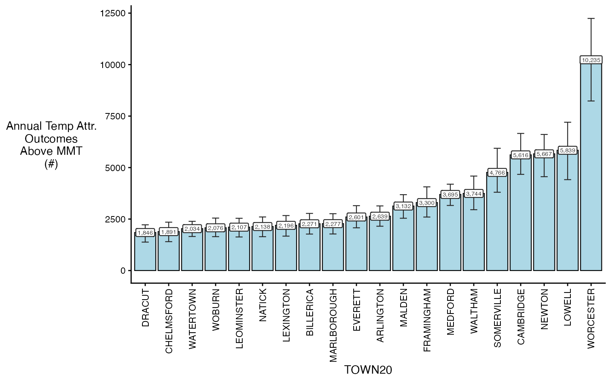
You can also plot spatially
spatial_plot(ma_AN, shp = ma_towns, table_type = "num", above_MMT = T)
#> TOWN20 COUNTY20 population above_MMT mean_annual_attr_num_est
#> <char> <char> <num> <lgcl> <num>
#> 1: ACTON MIDDLESEX 23864 TRUE 1239.000
#> 2: ARLINGTON MIDDLESEX 45906 TRUE 2638.625
#> 3: ASHBURNHAM WORCESTER 6337 TRUE 255.125
#> 4: ASHBY MIDDLESEX 3187 TRUE 156.750
#> 5: ASHLAND MIDDLESEX 18634 TRUE 671.250
#> ---
#> 110: WILMINGTON MIDDLESEX 23191 TRUE 1312.250
#> 111: WINCHENDON WORCESTER 10372 TRUE 549.500
#> 112: WINCHESTER MIDDLESEX 22809 TRUE 1423.250
#> 113: WOBURN MIDDLESEX 40992 TRUE 2076.125
#> 114: WORCESTER WORCESTER 204191 TRUE 10234.625
#> mean_annual_attr_num_lb mean_annual_attr_num_ub
#> <num> <num>
#> 1: 975.4750 1536.6875
#> 2: 2151.9750 3138.1250
#> 3: 200.3687 315.7750
#> 4: 115.2938 203.2750
#> 5: 482.8188 841.3625
#> ---
#> 110: 946.0938 1713.5625
#> 111: 422.5312 656.6312
#> 112: 1156.5438 1672.8500
#> 113: 1645.5687 2547.5437
#> 114: 8233.4875 12242.6812
#> Simple feature collection with 114 features and 42 fields
#> Geometry type: MULTIPOLYGON
#> Dimension: XY
#> Bounding box: xmin: 132799.7 ymin: 862007.2 xmax: 239462 ymax: 942912.8
#> Projected CRS: NAD83 / Massachusetts Mainland
#> First 10 features:
#> TOWN20 STATEFP20 COUNTYFP20 COUSUBFP20 COUSUBNS20 GEOID20
#> 1 ACTON 25 017 00380 00618213 2501700380
#> 2 ARLINGTON 25 017 01605 00619393 2501701605
#> 3 ASHBURNHAM 25 027 01885 00618356 2502701885
#> 4 ASHBY 25 017 01955 00618214 2501701955
#> 5 ASHLAND 25 017 02130 00619394 2501702130
#> 6 ATHOL 25 027 02480 00619473 2502702480
#> 7 AUBURN 25 027 02760 00619474 2502702760
#> 8 AYER 25 017 03005 00618215 2501703005
#> 9 BARRE 25 027 03740 00619475 2502703740
#> 10 BEDFORD 25 017 04615 00619395 2501704615
#> NAMELSAD20 LSAD20 CLASSFP20 MTFCC20 CNECTAFP20 NECTAFP20 NCTADVFP20
#> 1 Acton town 43 T1 G4040 715 71650 71634
#> 2 Arlington town 43 T1 G4040 715 71650 71634
#> 3 Ashburnham town 43 T1 G4040 715 74500 <NA>
#> 4 Ashby town 43 T1 G4040 715 74500 <NA>
#> 5 Ashland town 43 T1 G4040 715 71650 73104
#> 6 Athol town 43 T1 G4040 715 70450 <NA>
#> 7 Auburn town 43 T1 G4040 715 79600 <NA>
#> 8 Ayer town 43 T1 G4040 715 71650 71634
#> 9 Barre town 43 T1 G4040 715 79600 <NA>
#> 10 Bedford town 43 T1 G4040 715 71650 71634
#> FUNCSTAT20 ALAND20 AWATER20 INTPTLAT20 INTPTLON20 TOWN_ID FIPS_STCO2
#> 1 A 51453349 1115114 +42.4839530 -071.4384947 2 25017
#> 2 A 13319999 886901 +42.4187215 -071.1639124 10 25017
#> 3 A 99284822 6768398 +42.6486969 -071.9198962 11 25027
#> 4 A 61289600 1000254 +42.6762927 -071.8325227 12 25017
#> 5 A 31954435 1389649 +42.2577546 -071.4735257 14 25017
#> 6 A 83649153 2763016 +42.5759263 -072.2295891 15 25027
#> 7 A 40105400 2408374 +42.1988672 -071.8457222 17 25027
#> 8 A 23176782 1437476 +42.5665731 -071.5751350 19 25017
#> 9 A 114858654 718803 +42.4188835 -072.1120769 21 25027
#> 10 A 35385677 457784 +42.4993321 -071.2819012 23 25017
#> COUNTY20.x TYPE FOURCOLOR AREA_ACRES SQ_MILES POP1960 POP1970 POP1980
#> 1 MIDDLESEX T 2 12989.35 20.30 7238 14770 17544
#> 2 MIDDLESEX T 1 3510.40 5.49 49953 53524 48219
#> 3 WORCESTER T 2 26206.15 40.95 2758 3484 4075
#> 4 MIDDLESEX T 1 15392.13 24.05 1883 2274 2311
#> 5 MIDDLESEX T 3 8238.92 12.87 7779 8882 9165
#> 6 WORCESTER T 1 21352.36 33.36 11637 11185 10634
#> 7 WORCESTER T 2 10504.64 16.41 14047 15347 14845
#> 8 MIDDLESEX T 4 6082.13 9.50 14927 7393 6993
#> 9 WORCESTER T 1 28558.21 44.62 3479 3825 4102
#> 10 MIDDLESEX T 1 8856.72 13.84 10969 13513 13067
#> POP1990 POP2000 POP2010 POP2020 POPCH10_20 HOUSING20 SHAPE_AREA SHAPE_LEN
#> 1 17872 20331 21924 24021 2097 9219 52566027 30789.68
#> 2 44630 42389 42844 46308 3464 20461 14206098 16931.37
#> 3 5433 5546 6081 6315 234 2730 106052512 41818.42
#> 4 2717 2845 3074 3193 119 1243 62289742 35416.14
#> 5 12066 14674 16593 18832 2239 7495 33341745 25926.80
#> 6 11451 11299 11584 11945 361 5291 86409922 48179.61
#> 7 15005 15901 16188 16889 701 6999 42510768 24818.12
#> 8 6871 7287 7427 8479 1052 3807 24613491 25017.41
#> 9 4546 5113 5398 5530 132 2262 115570988 43248.14
#> 10 12996 12595 13320 14383 1063 5444 35841874 24810.30
#> COUNTY20.y population above_MMT mean_annual_attr_num_est
#> 1 MIDDLESEX 23864 TRUE 1239.000
#> 2 MIDDLESEX 45906 TRUE 2638.625
#> 3 WORCESTER 6337 TRUE 255.125
#> 4 MIDDLESEX 3187 TRUE 156.750
#> 5 MIDDLESEX 18634 TRUE 671.250
#> 6 WORCESTER 11921 TRUE 592.125
#> 7 WORCESTER 16849 TRUE 742.000
#> 8 MIDDLESEX 8408 TRUE 369.625
#> 9 WORCESTER 5531 TRUE 194.375
#> 10 MIDDLESEX 14273 TRUE 793.125
#> mean_annual_attr_num_lb mean_annual_attr_num_ub
#> 1 975.4750 1536.6875
#> 2 2151.9750 3138.1250
#> 3 200.3687 315.7750
#> 4 115.2938 203.2750
#> 5 482.8188 841.3625
#> 6 469.2000 710.8312
#> 7 577.1375 880.7500
#> 8 267.0312 457.6125
#> 9 126.1750 263.3937
#> 10 637.5688 952.0875
#> geometry
#> 1 MULTIPOLYGON (((209455.5 91...
#> 2 MULTIPOLYGON (((228807.6 90...
#> 3 MULTIPOLYGON (((167331.8 94...
#> 4 MULTIPOLYGON (((177670.7 93...
#> 5 MULTIPOLYGON (((206659 8896...
#> 6 MULTIPOLYGON (((146318.2 93...
#> 7 MULTIPOLYGON (((175466.6 88...
#> 8 MULTIPOLYGON (((199059.1 92...
#> 9 MULTIPOLYGON (((158242.2 90...
#> 10 MULTIPOLYGON (((222035.1 91...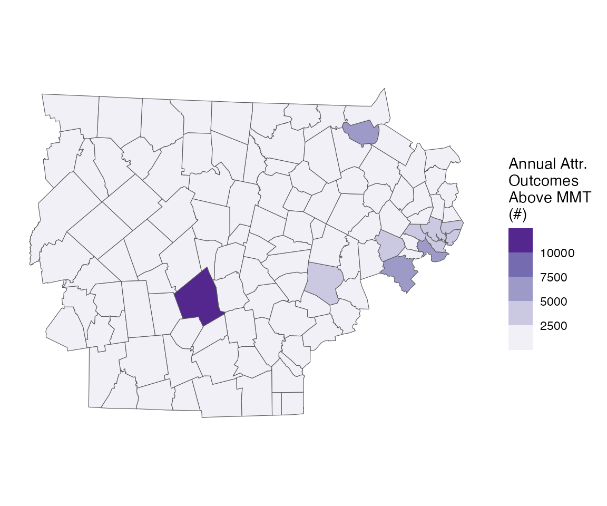
Running with factors
Very often, we also get asked to run these results, with differences by both modifiable and non-modifiable factors:
- age group
- sex
- the prevalence of air conditioning in a certain town
We can easily do this, by using the collapse_to
argument:
ma_outcomes_tbl_fct <- make_outcome_table(
deaths_sub, outcome_columns,
time_subset = list(
month = 5:9,
year = 2012:2015
),
collapse_to = 'age_grp')
#> > Factors in data
#> > grp_level == FALSE, so using geo_unit as strata
#> Missing outcome values introduced by xgrid were set to 0;
#> assumes that every time in the dataset should have an outcome value
#> strata dt_by = 'day', setting strata as geo_unit:yr:mn:dowLets look at the result:
head(ma_outcomes_tbl_fct)
#> date TOWN20 COUNTY20 age_grp daily_deaths strata
#> <IDat> <char> <char> <char> <int> <char>
#> 1: 2012-05-01 ACTON MIDDLESEX 0-17 25 ACTON:yr2012:mn05:dow03
#> 2: 2012-05-01 ACTON MIDDLESEX 18-64 24 ACTON:yr2012:mn05:dow03
#> 3: 2012-05-01 ACTON MIDDLESEX 65+ 24 ACTON:yr2012:mn05:dow03
#> 4: 2012-05-02 ACTON MIDDLESEX 0-17 26 ACTON:yr2012:mn05:dow04
#> 5: 2012-05-02 ACTON MIDDLESEX 18-64 26 ACTON:yr2012:mn05:dow04
#> 6: 2012-05-02 ACTON MIDDLESEX 65+ 26 ACTON:yr2012:mn05:dow04
#> strata_total match_strata
#> <int> <char>
#> 1: 147 ACTON:2012-05-01
#> 2: 136 ACTON:2012-05-01
#> 3: 140 ACTON:2012-05-01
#> 4: 145 ACTON:2012-05-02
#> 5: 136 ACTON:2012-05-02
#> 6: 139 ACTON:2012-05-02Now, all of our other functions can stay the same:
Running the model (adding the verbose argument so you
can follow along)
ma_model_fct <- condPois_2stage(ma_exposure_matrix, ma_outcomes_tbl_fct,
verbose = 1, global_cen = 15)
#> < age_grp : 0-17 >
#> -- validation passed
#> -- stage 1
#>
#> crossbasis args for geo_unit ACTON :
#>
#> maxlag: 5
#>
#> argvar:
#> List of 2
#> $ fun : chr "ns"
#> $ knots: Named num [1:2] 25.7 31.4
#> ..- attr(*, "names")= chr [1:2] "50%" "90%"
#>
#> arglag:
#> List of 2
#> $ fun : chr "ns"
#> $ knots: num [1:2] 0.878 2.095
#>
#> strata:
#> ACTON:yr2012:mn05:dow03
#> strata_min: 0
#>
#> min_n: 50
#>
#> formula:
#> daily_deaths ~ cb
#> family: quasipoisson
#>
#> -- mixmeta
#> formula: ~ 1 | COUNTY20/TOWN20
#> -- stage 2
#>
#> < age_grp : 18-64 >
#> -- validation passed
#> -- stage 1
#>
#> crossbasis args for geo_unit ACTON :
#>
#> maxlag: 5
#>
#> argvar:
#> List of 2
#> $ fun : chr "ns"
#> $ knots: Named num [1:2] 25.7 31.4
#> ..- attr(*, "names")= chr [1:2] "50%" "90%"
#>
#> arglag:
#> List of 2
#> $ fun : chr "ns"
#> $ knots: num [1:2] 0.878 2.095
#>
#> strata:
#> ACTON:yr2012:mn05:dow03
#> strata_min: 0
#>
#> min_n: 50
#>
#> formula:
#> daily_deaths ~ cb
#> family: quasipoisson
#>
#> -- mixmeta
#> formula: ~ 1 | COUNTY20/TOWN20
#> -- stage 2
#>
#> < age_grp : 65+ >
#> -- validation passed
#> -- stage 1
#>
#> crossbasis args for geo_unit ACTON :
#>
#> maxlag: 5
#>
#> argvar:
#> List of 2
#> $ fun : chr "ns"
#> $ knots: Named num [1:2] 25.7 31.4
#> ..- attr(*, "names")= chr [1:2] "50%" "90%"
#>
#> arglag:
#> List of 2
#> $ fun : chr "ns"
#> $ knots: num [1:2] 0.878 2.095
#>
#> strata:
#> ACTON:yr2012:mn05:dow03
#> strata_min: 0
#>
#> min_n: 50
#>
#> formula:
#> daily_deaths ~ cb
#> family: quasipoisson
#>
#> -- mixmeta
#> formula: ~ 1 | COUNTY20/TOWN20
#> -- stage 2And plotting the output
plot(ma_model_fct, "CAMBRIDGE")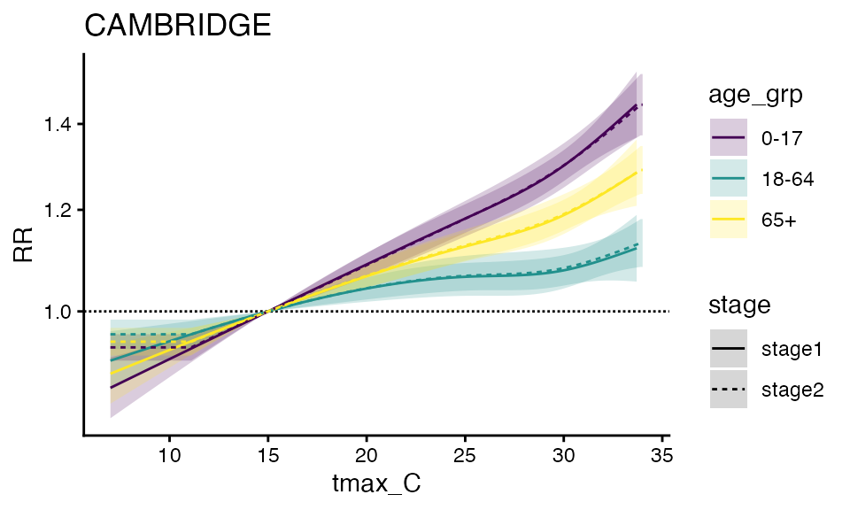
forest_plot(ma_model_fct, exposure_val = 25.1)
#> Warning in forest_plot.condPois_2stage_list(ma_model_fct, exposure_val = 25.1):
#> plotting by group since n_geos > 20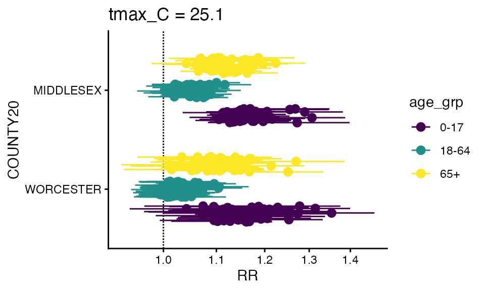
You can also make a spatial plot at a specific exposure value:
spatial_plot(ma_model_fct, shp = ma_towns, exposure_val = 25.1)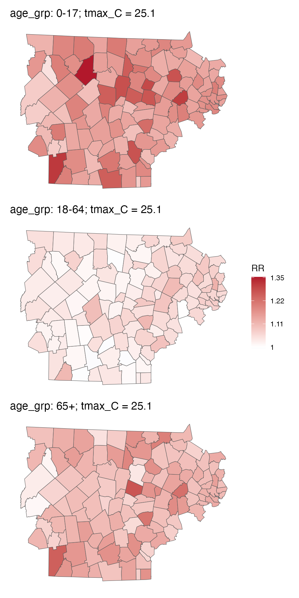
You can also getRR:
getRR(ma_model_fct)
#> TOWN20 COUNTY20 tmax_C RR RRlb RRub age_grp
#> <char> <char> <num> <num> <num> <num> <char>
#> 1: ACTON MIDDLESEX 7.0 0.9414289 0.8898588 0.9959876 0-17
#> 2: ACTON MIDDLESEX 7.1 0.9420825 0.8911541 0.9959214 0-17
#> 3: ACTON MIDDLESEX 7.2 0.9427367 0.8924513 0.9958554 0-17
#> 4: ACTON MIDDLESEX 7.3 0.9433914 0.8937504 0.9957895 0-17
#> 5: ACTON MIDDLESEX 7.4 0.9440467 0.8950514 0.9957240 0-17
#> ---
#> 97538: WORCESTER WORCESTER 33.6 1.2231257 1.1800147 1.2678116 65+
#> 97539: WORCESTER WORCESTER 33.7 1.2246071 1.1807440 1.2700996 65+
#> 97540: WORCESTER WORCESTER 33.8 1.2260900 1.1814480 1.2724190 65+
#> 97541: WORCESTER WORCESTER 33.9 1.2275747 1.1821281 1.2747685 65+
#> 97542: WORCESTER WORCESTER 34.0 1.2290611 1.1827859 1.2771468 65+
#> model_class
#> <char>
#> 1: condPois_2stage_list
#> 2: condPois_2stage_list
#> 3: condPois_2stage_list
#> 4: condPois_2stage_list
#> 5: condPois_2stage_list
#> ---
#> 97538: condPois_2stage_list
#> 97539: condPois_2stage_list
#> 97540: condPois_2stage_list
#> 97541: condPois_2stage_list
#> 97542: condPois_2stage_listAnd finally, you can calcAN, note that both
ma_outcomes_tbl_fct and ma_model_fct need to
have factors, again adding the verbose so you can see the progress
ma_AN_fct <- calc_AN(ma_model_fct,
ma_outcomes_tbl_fct,
ma_pop_data_long,
spatial_agg_type = 'TOWN20', spatial_join_col = 'TOWN20',
verbose = 1)
#> -- over-writing `scale` argument with factor scales
#> < age_grp : 0-17 >
#> Warning in calc_AN(model = sub_model, outcomes_tbl = sub_outcomes_tbl, pop_data
#> = sub_pop_data, : some pop data are zero
#> -- validation passed
#> -- estimate in each geo_unit
#> -- summarize by simulation
#> < age_grp : 18-64 >
#> -- validation passed
#> -- estimate in each geo_unit
#> -- summarize by simulation
#> < age_grp : 65+ >
#> -- validation passed
#> -- estimate in each geo_unit
#> -- summarize by simulationAnd you can plot either one – some empty bars not because there are no adults there but because this takes the top 20 in each bin, which don’t have to overlap. Probably a better way to do this in the future but fine for diagnostics.
plot(ma_AN_fct, "num", above_MMT = T)
#> Warning in plot.calcAN_list(ma_AN_fct, "num", above_MMT = T): plot elements >
#> 20, subsetting to top 20
#> Warning in plot.calcAN_list(ma_AN_fct, "num", above_MMT = T): plot elements >
#> 20, subsetting to top 20
#> Warning in plot.calcAN_list(ma_AN_fct, "num", above_MMT = T): plot elements >
#> 20, subsetting to top 20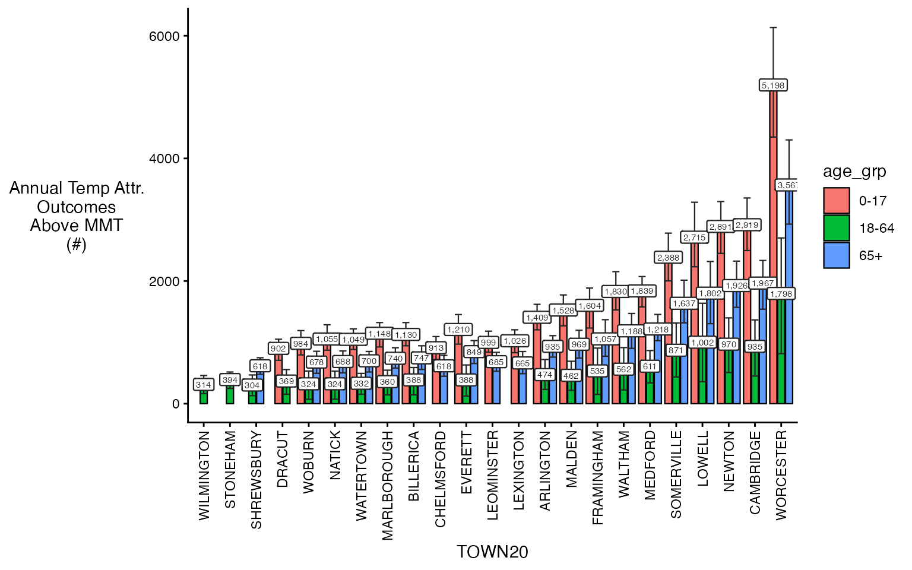
You can also make use of some additional arguments to get plot
subsets, including spatial_sub and
ordered_levels.
plot(ma_AN_fct, 'rate', above_MMT = T,
spatial_sub = c('BOSTON', 'CAMBRIDGE'),
ordered_levels = c("0-17", "18-64", "65+"))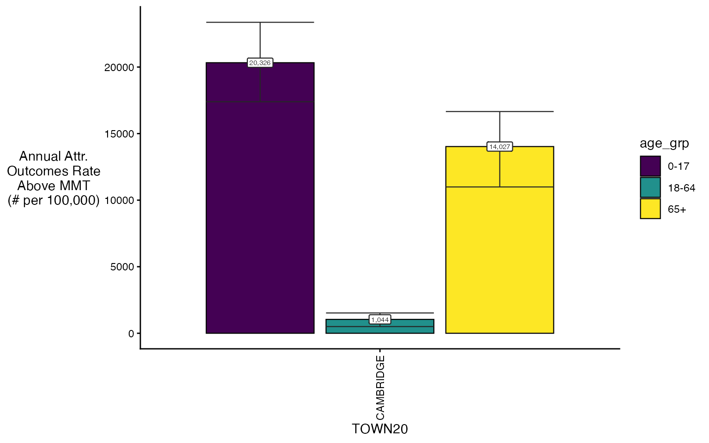
You can also plot spatially
spatial_plot(ma_AN_fct, shp = ma_towns, table_type = "num", above_MMT = T)
#> TOWN20 COUNTY20 population above_MMT mean_annual_attr_num_est
#> <char> <char> <num> <lgcl> <num>
#> 1: WORCESTER WORCESTER 39908 TRUE 5200.000
#> 2: CAMBRIDGE MIDDLESEX 14359 TRUE 2921.125
#> 3: NEWTON MIDDLESEX 18368 TRUE 2895.125
#> 4: LOWELL MIDDLESEX 23724 TRUE 2717.500
#> 5: SOMERVILLE MIDDLESEX 8379 TRUE 2389.750
#> ---
#> 110: EAST BROOKFIELD WORCESTER 371 TRUE 22.000
#> 111: PETERSHAM WORCESTER 160 TRUE 21.625
#> 112: HARDWICK WORCESTER 591 TRUE 20.000
#> 113: OAKHAM WORCESTER 267 TRUE 17.750
#> 114: PHILLIPSTON WORCESTER 359 TRUE 14.000
#> mean_annual_attr_num_lb mean_annual_attr_num_ub age_grp
#> <num> <num> <char>
#> 1: 4350.55625 6136.95625 0-17
#> 2: 2500.25625 3357.65000 0-17
#> 3: 2453.97500 3300.11875 0-17
#> 4: 2236.08750 3286.89375 0-17
#> 5: 2004.56875 2782.21875 0-17
#> ---
#> 110: 5.10625 38.88125 0-17
#> 111: -0.76250 41.52500 0-17
#> 112: -3.77500 39.00000 0-17
#> 113: 3.48750 31.63125 0-17
#> 114: -10.65625 34.77500 0-17
#> Simple feature collection with 114 features and 43 fields
#> Geometry type: MULTIPOLYGON
#> Dimension: XY
#> Bounding box: xmin: 132799.7 ymin: 862007.2 xmax: 239462 ymax: 942912.8
#> Projected CRS: NAD83 / Massachusetts Mainland
#> First 10 features:
#> TOWN20 STATEFP20 COUNTYFP20 COUSUBFP20 COUSUBNS20 GEOID20
#> 1 ACTON 25 017 00380 00618213 2501700380
#> 2 ARLINGTON 25 017 01605 00619393 2501701605
#> 3 ASHBURNHAM 25 027 01885 00618356 2502701885
#> 4 ASHBY 25 017 01955 00618214 2501701955
#> 5 ASHLAND 25 017 02130 00619394 2501702130
#> 6 ATHOL 25 027 02480 00619473 2502702480
#> 7 AUBURN 25 027 02760 00619474 2502702760
#> 8 AYER 25 017 03005 00618215 2501703005
#> 9 BARRE 25 027 03740 00619475 2502703740
#> 10 BEDFORD 25 017 04615 00619395 2501704615
#> NAMELSAD20 LSAD20 CLASSFP20 MTFCC20 CNECTAFP20 NECTAFP20 NCTADVFP20
#> 1 Acton town 43 T1 G4040 715 71650 71634
#> 2 Arlington town 43 T1 G4040 715 71650 71634
#> 3 Ashburnham town 43 T1 G4040 715 74500 <NA>
#> 4 Ashby town 43 T1 G4040 715 74500 <NA>
#> 5 Ashland town 43 T1 G4040 715 71650 73104
#> 6 Athol town 43 T1 G4040 715 70450 <NA>
#> 7 Auburn town 43 T1 G4040 715 79600 <NA>
#> 8 Ayer town 43 T1 G4040 715 71650 71634
#> 9 Barre town 43 T1 G4040 715 79600 <NA>
#> 10 Bedford town 43 T1 G4040 715 71650 71634
#> FUNCSTAT20 ALAND20 AWATER20 INTPTLAT20 INTPTLON20 TOWN_ID FIPS_STCO2
#> 1 A 51453349 1115114 +42.4839530 -071.4384947 2 25017
#> 2 A 13319999 886901 +42.4187215 -071.1639124 10 25017
#> 3 A 99284822 6768398 +42.6486969 -071.9198962 11 25027
#> 4 A 61289600 1000254 +42.6762927 -071.8325227 12 25017
#> 5 A 31954435 1389649 +42.2577546 -071.4735257 14 25017
#> 6 A 83649153 2763016 +42.5759263 -072.2295891 15 25027
#> 7 A 40105400 2408374 +42.1988672 -071.8457222 17 25027
#> 8 A 23176782 1437476 +42.5665731 -071.5751350 19 25017
#> 9 A 114858654 718803 +42.4188835 -072.1120769 21 25027
#> 10 A 35385677 457784 +42.4993321 -071.2819012 23 25017
#> COUNTY20.x TYPE FOURCOLOR AREA_ACRES SQ_MILES POP1960 POP1970 POP1980
#> 1 MIDDLESEX T 2 12989.35 20.30 7238 14770 17544
#> 2 MIDDLESEX T 1 3510.40 5.49 49953 53524 48219
#> 3 WORCESTER T 2 26206.15 40.95 2758 3484 4075
#> 4 MIDDLESEX T 1 15392.13 24.05 1883 2274 2311
#> 5 MIDDLESEX T 3 8238.92 12.87 7779 8882 9165
#> 6 WORCESTER T 1 21352.36 33.36 11637 11185 10634
#> 7 WORCESTER T 2 10504.64 16.41 14047 15347 14845
#> 8 MIDDLESEX T 4 6082.13 9.50 14927 7393 6993
#> 9 WORCESTER T 1 28558.21 44.62 3479 3825 4102
#> 10 MIDDLESEX T 1 8856.72 13.84 10969 13513 13067
#> POP1990 POP2000 POP2010 POP2020 POPCH10_20 HOUSING20 SHAPE_AREA SHAPE_LEN
#> 1 17872 20331 21924 24021 2097 9219 52566027 30789.68
#> 2 44630 42389 42844 46308 3464 20461 14206098 16931.37
#> 3 5433 5546 6081 6315 234 2730 106052512 41818.42
#> 4 2717 2845 3074 3193 119 1243 62289742 35416.14
#> 5 12066 14674 16593 18832 2239 7495 33341745 25926.80
#> 6 11451 11299 11584 11945 361 5291 86409922 48179.61
#> 7 15005 15901 16188 16889 701 6999 42510768 24818.12
#> 8 6871 7287 7427 8479 1052 3807 24613491 25017.41
#> 9 4546 5113 5398 5530 132 2262 115570988 43248.14
#> 10 12996 12595 13320 14383 1063 5444 35841874 24810.30
#> COUNTY20.y population above_MMT mean_annual_attr_num_est
#> 1 MIDDLESEX 5966 TRUE 609.375
#> 2 MIDDLESEX 9788 TRUE 1409.875
#> 3 WORCESTER 1326 TRUE 157.750
#> 4 MIDDLESEX 496 TRUE 88.125
#> 5 MIDDLESEX 3539 TRUE 304.125
#> 6 WORCESTER 2376 TRUE 285.625
#> 7 WORCESTER 3479 TRUE 296.125
#> 8 MIDDLESEX 1501 TRUE 257.125
#> 9 WORCESTER 901 TRUE 100.125
#> 10 MIDDLESEX 3315 TRUE 391.875
#> mean_annual_attr_num_lb mean_annual_attr_num_ub age_grp
#> 1 472.41250 736.4188 0-17
#> 2 1205.53125 1621.0437 0-17
#> 3 100.61875 197.4187 0-17
#> 4 51.30625 120.7500 0-17
#> 5 229.68750 390.6562 0-17
#> 6 224.08125 348.9562 0-17
#> 7 217.46875 388.9312 0-17
#> 8 198.41250 319.3937 0-17
#> 9 38.25000 147.7500 0-17
#> 10 318.75000 470.4062 0-17
#> geometry
#> 1 MULTIPOLYGON (((209455.5 91...
#> 2 MULTIPOLYGON (((228807.6 90...
#> 3 MULTIPOLYGON (((167331.8 94...
#> 4 MULTIPOLYGON (((177670.7 93...
#> 5 MULTIPOLYGON (((206659 8896...
#> 6 MULTIPOLYGON (((146318.2 93...
#> 7 MULTIPOLYGON (((175466.6 88...
#> 8 MULTIPOLYGON (((199059.1 92...
#> 9 MULTIPOLYGON (((158242.2 90...
#> 10 MULTIPOLYGON (((222035.1 91...
#> TOWN20 COUNTY20 population above_MMT mean_annual_attr_num_est
#> <char> <char> <num> <lgcl> <num>
#> 1: WORCESTER WORCESTER 137115 TRUE 1798.500
#> 2: LOWELL MIDDLESEX 77712 TRUE 1002.750
#> 3: NEWTON MIDDLESEX 53545 TRUE 972.125
#> 4: CAMBRIDGE MIDDLESEX 89583 TRUE 936.500
#> 5: SOMERVILLE MIDDLESEX 64223 TRUE 871.750
#> ---
#> 110: NEW BRAINTREE WORCESTER 568 TRUE 8.250
#> 111: OAKHAM WORCESTER 1006 TRUE 8.000
#> 112: PETERSHAM WORCESTER 710 TRUE 7.375
#> 113: EAST BROOKFIELD WORCESTER 1218 TRUE 7.250
#> 114: PHILLIPSTON WORCESTER 1283 TRUE 6.750
#> mean_annual_attr_num_lb mean_annual_attr_num_ub age_grp
#> <num> <num> <char>
#> 1: 817.11250 2702.28750 18-64
#> 2: 359.66875 1638.38750 18-64
#> 3: 510.31250 1399.58125 18-64
#> 4: 452.58750 1366.34375 18-64
#> 5: 436.60000 1315.90000 18-64
#> ---
#> 110: -1.88125 18.50000 18-64
#> 111: -1.89375 17.63125 18-64
#> 112: -5.25000 21.75000 18-64
#> 113: -3.38125 17.88125 18-64
#> 114: -9.25000 21.38125 18-64
#> Simple feature collection with 114 features and 43 fields
#> Geometry type: MULTIPOLYGON
#> Dimension: XY
#> Bounding box: xmin: 132799.7 ymin: 862007.2 xmax: 239462 ymax: 942912.8
#> Projected CRS: NAD83 / Massachusetts Mainland
#> First 10 features:
#> TOWN20 STATEFP20 COUNTYFP20 COUSUBFP20 COUSUBNS20 GEOID20
#> 1 ACTON 25 017 00380 00618213 2501700380
#> 2 ARLINGTON 25 017 01605 00619393 2501701605
#> 3 ASHBURNHAM 25 027 01885 00618356 2502701885
#> 4 ASHBY 25 017 01955 00618214 2501701955
#> 5 ASHLAND 25 017 02130 00619394 2501702130
#> 6 ATHOL 25 027 02480 00619473 2502702480
#> 7 AUBURN 25 027 02760 00619474 2502702760
#> 8 AYER 25 017 03005 00618215 2501703005
#> 9 BARRE 25 027 03740 00619475 2502703740
#> 10 BEDFORD 25 017 04615 00619395 2501704615
#> NAMELSAD20 LSAD20 CLASSFP20 MTFCC20 CNECTAFP20 NECTAFP20 NCTADVFP20
#> 1 Acton town 43 T1 G4040 715 71650 71634
#> 2 Arlington town 43 T1 G4040 715 71650 71634
#> 3 Ashburnham town 43 T1 G4040 715 74500 <NA>
#> 4 Ashby town 43 T1 G4040 715 74500 <NA>
#> 5 Ashland town 43 T1 G4040 715 71650 73104
#> 6 Athol town 43 T1 G4040 715 70450 <NA>
#> 7 Auburn town 43 T1 G4040 715 79600 <NA>
#> 8 Ayer town 43 T1 G4040 715 71650 71634
#> 9 Barre town 43 T1 G4040 715 79600 <NA>
#> 10 Bedford town 43 T1 G4040 715 71650 71634
#> FUNCSTAT20 ALAND20 AWATER20 INTPTLAT20 INTPTLON20 TOWN_ID FIPS_STCO2
#> 1 A 51453349 1115114 +42.4839530 -071.4384947 2 25017
#> 2 A 13319999 886901 +42.4187215 -071.1639124 10 25017
#> 3 A 99284822 6768398 +42.6486969 -071.9198962 11 25027
#> 4 A 61289600 1000254 +42.6762927 -071.8325227 12 25017
#> 5 A 31954435 1389649 +42.2577546 -071.4735257 14 25017
#> 6 A 83649153 2763016 +42.5759263 -072.2295891 15 25027
#> 7 A 40105400 2408374 +42.1988672 -071.8457222 17 25027
#> 8 A 23176782 1437476 +42.5665731 -071.5751350 19 25017
#> 9 A 114858654 718803 +42.4188835 -072.1120769 21 25027
#> 10 A 35385677 457784 +42.4993321 -071.2819012 23 25017
#> COUNTY20.x TYPE FOURCOLOR AREA_ACRES SQ_MILES POP1960 POP1970 POP1980
#> 1 MIDDLESEX T 2 12989.35 20.30 7238 14770 17544
#> 2 MIDDLESEX T 1 3510.40 5.49 49953 53524 48219
#> 3 WORCESTER T 2 26206.15 40.95 2758 3484 4075
#> 4 MIDDLESEX T 1 15392.13 24.05 1883 2274 2311
#> 5 MIDDLESEX T 3 8238.92 12.87 7779 8882 9165
#> 6 WORCESTER T 1 21352.36 33.36 11637 11185 10634
#> 7 WORCESTER T 2 10504.64 16.41 14047 15347 14845
#> 8 MIDDLESEX T 4 6082.13 9.50 14927 7393 6993
#> 9 WORCESTER T 1 28558.21 44.62 3479 3825 4102
#> 10 MIDDLESEX T 1 8856.72 13.84 10969 13513 13067
#> POP1990 POP2000 POP2010 POP2020 POPCH10_20 HOUSING20 SHAPE_AREA SHAPE_LEN
#> 1 17872 20331 21924 24021 2097 9219 52566027 30789.68
#> 2 44630 42389 42844 46308 3464 20461 14206098 16931.37
#> 3 5433 5546 6081 6315 234 2730 106052512 41818.42
#> 4 2717 2845 3074 3193 119 1243 62289742 35416.14
#> 5 12066 14674 16593 18832 2239 7495 33341745 25926.80
#> 6 11451 11299 11584 11945 361 5291 86409922 48179.61
#> 7 15005 15901 16188 16889 701 6999 42510768 24818.12
#> 8 6871 7287 7427 8479 1052 3807 24613491 25017.41
#> 9 4546 5113 5398 5530 132 2262 115570988 43248.14
#> 10 12996 12595 13320 14383 1063 5444 35841874 24810.30
#> COUNTY20.y population above_MMT mean_annual_attr_num_est
#> 1 MIDDLESEX 14056 TRUE 253.25
#> 2 MIDDLESEX 28495 TRUE 474.25
#> 3 WORCESTER 3872 TRUE 23.75
#> 4 MIDDLESEX 2034 TRUE 28.25
#> 5 MIDDLESEX 11882 TRUE 91.00
#> 6 WORCESTER 7320 TRUE 99.50
#> 7 WORCESTER 9780 TRUE 121.50
#> 8 MIDDLESEX 5581 TRUE 58.00
#> 9 WORCESTER 3767 TRUE 20.75
#> 10 MIDDLESEX 8608 TRUE 154.00
#> mean_annual_attr_num_lb mean_annual_attr_num_ub age_grp
#> 1 123.68750 385.70625 18-64
#> 2 232.53125 720.59375 18-64
#> 3 -5.66875 51.00000 18-64
#> 4 8.11875 51.15625 18-64
#> 5 10.95000 165.65625 18-64
#> 6 40.54375 151.89375 18-64
#> 7 48.00000 187.55000 18-64
#> 8 20.50000 104.26250 18-64
#> 9 -23.06250 57.51250 18-64
#> 10 86.96250 222.26250 18-64
#> geometry
#> 1 MULTIPOLYGON (((209455.5 91...
#> 2 MULTIPOLYGON (((228807.6 90...
#> 3 MULTIPOLYGON (((167331.8 94...
#> 4 MULTIPOLYGON (((177670.7 93...
#> 5 MULTIPOLYGON (((206659 8896...
#> 6 MULTIPOLYGON (((146318.2 93...
#> 7 MULTIPOLYGON (((175466.6 88...
#> 8 MULTIPOLYGON (((199059.1 92...
#> 9 MULTIPOLYGON (((158242.2 90...
#> 10 MULTIPOLYGON (((222035.1 91...
#> TOWN20 COUNTY20 population above_MMT mean_annual_attr_num_est
#> <char> <char> <num> <lgcl> <num>
#> 1: WORCESTER WORCESTER 27168 TRUE 3568.250
#> 2: CAMBRIDGE MIDDLESEX 14020 TRUE 1969.375
#> 3: NEWTON MIDDLESEX 16540 TRUE 1928.375
#> 4: LOWELL MIDDLESEX 13301 TRUE 1803.500
#> 5: SOMERVILLE MIDDLESEX 7862 TRUE 1638.125
#> ---
#> 110: ROYALSTON WORCESTER 268 TRUE 20.000
#> 111: OAKHAM WORCESTER 312 TRUE 17.000
#> 112: PETERSHAM WORCESTER 307 TRUE 9.250
#> 113: PHILLIPSTON WORCESTER 276 TRUE 6.750
#> 114: HARDWICK WORCESTER 519 TRUE 5.000
#> mean_annual_attr_num_lb mean_annual_attr_num_ub age_grp
#> <num> <num> <char>
#> 1: 2929.96875 4302.15625 65+
#> 2: 1543.93750 2337.52500 65+
#> 3: 1574.21875 2327.81250 65+
#> 4: 1306.61875 2320.56875 65+
#> 5: 1319.15000 2015.06875 65+
#> ---
#> 110: 6.11875 31.27500 65+
#> 111: 5.11875 26.63125 65+
#> 112: -9.14375 26.26250 65+
#> 113: -12.64375 22.38125 65+
#> 114: -15.64375 24.13125 65+
#> Simple feature collection with 114 features and 43 fields
#> Geometry type: MULTIPOLYGON
#> Dimension: XY
#> Bounding box: xmin: 132799.7 ymin: 862007.2 xmax: 239462 ymax: 942912.8
#> Projected CRS: NAD83 / Massachusetts Mainland
#> First 10 features:
#> TOWN20 STATEFP20 COUNTYFP20 COUSUBFP20 COUSUBNS20 GEOID20
#> 1 ACTON 25 017 00380 00618213 2501700380
#> 2 ARLINGTON 25 017 01605 00619393 2501701605
#> 3 ASHBURNHAM 25 027 01885 00618356 2502701885
#> 4 ASHBY 25 017 01955 00618214 2501701955
#> 5 ASHLAND 25 017 02130 00619394 2501702130
#> 6 ATHOL 25 027 02480 00619473 2502702480
#> 7 AUBURN 25 027 02760 00619474 2502702760
#> 8 AYER 25 017 03005 00618215 2501703005
#> 9 BARRE 25 027 03740 00619475 2502703740
#> 10 BEDFORD 25 017 04615 00619395 2501704615
#> NAMELSAD20 LSAD20 CLASSFP20 MTFCC20 CNECTAFP20 NECTAFP20 NCTADVFP20
#> 1 Acton town 43 T1 G4040 715 71650 71634
#> 2 Arlington town 43 T1 G4040 715 71650 71634
#> 3 Ashburnham town 43 T1 G4040 715 74500 <NA>
#> 4 Ashby town 43 T1 G4040 715 74500 <NA>
#> 5 Ashland town 43 T1 G4040 715 71650 73104
#> 6 Athol town 43 T1 G4040 715 70450 <NA>
#> 7 Auburn town 43 T1 G4040 715 79600 <NA>
#> 8 Ayer town 43 T1 G4040 715 71650 71634
#> 9 Barre town 43 T1 G4040 715 79600 <NA>
#> 10 Bedford town 43 T1 G4040 715 71650 71634
#> FUNCSTAT20 ALAND20 AWATER20 INTPTLAT20 INTPTLON20 TOWN_ID FIPS_STCO2
#> 1 A 51453349 1115114 +42.4839530 -071.4384947 2 25017
#> 2 A 13319999 886901 +42.4187215 -071.1639124 10 25017
#> 3 A 99284822 6768398 +42.6486969 -071.9198962 11 25027
#> 4 A 61289600 1000254 +42.6762927 -071.8325227 12 25017
#> 5 A 31954435 1389649 +42.2577546 -071.4735257 14 25017
#> 6 A 83649153 2763016 +42.5759263 -072.2295891 15 25027
#> 7 A 40105400 2408374 +42.1988672 -071.8457222 17 25027
#> 8 A 23176782 1437476 +42.5665731 -071.5751350 19 25017
#> 9 A 114858654 718803 +42.4188835 -072.1120769 21 25027
#> 10 A 35385677 457784 +42.4993321 -071.2819012 23 25017
#> COUNTY20.x TYPE FOURCOLOR AREA_ACRES SQ_MILES POP1960 POP1970 POP1980
#> 1 MIDDLESEX T 2 12989.35 20.30 7238 14770 17544
#> 2 MIDDLESEX T 1 3510.40 5.49 49953 53524 48219
#> 3 WORCESTER T 2 26206.15 40.95 2758 3484 4075
#> 4 MIDDLESEX T 1 15392.13 24.05 1883 2274 2311
#> 5 MIDDLESEX T 3 8238.92 12.87 7779 8882 9165
#> 6 WORCESTER T 1 21352.36 33.36 11637 11185 10634
#> 7 WORCESTER T 2 10504.64 16.41 14047 15347 14845
#> 8 MIDDLESEX T 4 6082.13 9.50 14927 7393 6993
#> 9 WORCESTER T 1 28558.21 44.62 3479 3825 4102
#> 10 MIDDLESEX T 1 8856.72 13.84 10969 13513 13067
#> POP1990 POP2000 POP2010 POP2020 POPCH10_20 HOUSING20 SHAPE_AREA SHAPE_LEN
#> 1 17872 20331 21924 24021 2097 9219 52566027 30789.68
#> 2 44630 42389 42844 46308 3464 20461 14206098 16931.37
#> 3 5433 5546 6081 6315 234 2730 106052512 41818.42
#> 4 2717 2845 3074 3193 119 1243 62289742 35416.14
#> 5 12066 14674 16593 18832 2239 7495 33341745 25926.80
#> 6 11451 11299 11584 11945 361 5291 86409922 48179.61
#> 7 15005 15901 16188 16889 701 6999 42510768 24818.12
#> 8 6871 7287 7427 8479 1052 3807 24613491 25017.41
#> 9 4546 5113 5398 5530 132 2262 115570988 43248.14
#> 10 12996 12595 13320 14383 1063 5444 35841874 24810.30
#> COUNTY20.y population above_MMT mean_annual_attr_num_est
#> 1 MIDDLESEX 3842 TRUE 411.750
#> 2 MIDDLESEX 7623 TRUE 935.750
#> 3 WORCESTER 1139 TRUE 98.125
#> 4 MIDDLESEX 657 TRUE 31.375
#> 5 MIDDLESEX 3213 TRUE 240.875
#> 6 WORCESTER 2225 TRUE 209.125
#> 7 WORCESTER 3590 TRUE 259.625
#> 8 MIDDLESEX 1326 TRUE 131.375
#> 9 WORCESTER 863 TRUE 59.750
#> 10 MIDDLESEX 2350 TRUE 296.875
#> mean_annual_attr_num_lb mean_annual_attr_num_ub age_grp
#> 1 282.36875 523.0250 65+
#> 2 760.48750 1109.9812 65+
#> 3 56.06875 137.3937 65+
#> 4 2.45000 57.8000 65+
#> 5 170.98750 316.3375 65+
#> 6 148.34375 265.1562 65+
#> 7 168.98125 335.2125 65+
#> 8 72.61875 179.8812 65+
#> 9 2.11875 104.3937 65+
#> 10 232.84375 365.0875 65+
#> geometry
#> 1 MULTIPOLYGON (((209455.5 91...
#> 2 MULTIPOLYGON (((228807.6 90...
#> 3 MULTIPOLYGON (((167331.8 94...
#> 4 MULTIPOLYGON (((177670.7 93...
#> 5 MULTIPOLYGON (((206659 8896...
#> 6 MULTIPOLYGON (((146318.2 93...
#> 7 MULTIPOLYGON (((175466.6 88...
#> 8 MULTIPOLYGON (((199059.1 92...
#> 9 MULTIPOLYGON (((158242.2 90...
#> 10 MULTIPOLYGON (((222035.1 91...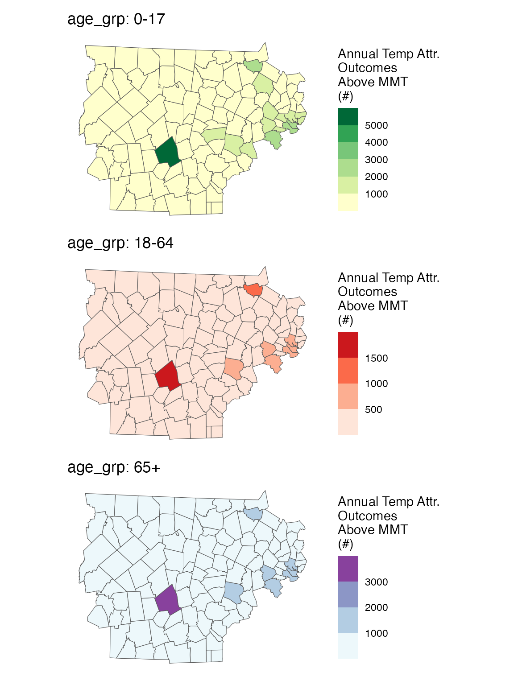